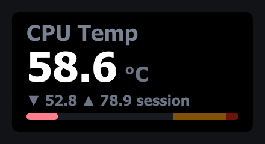
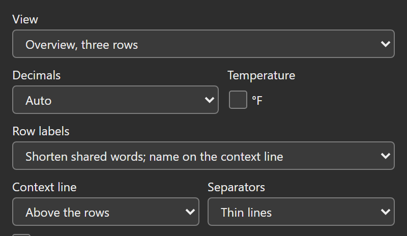
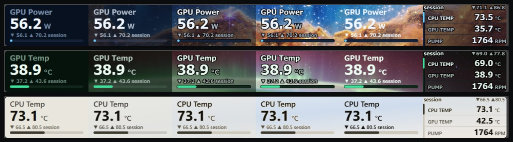
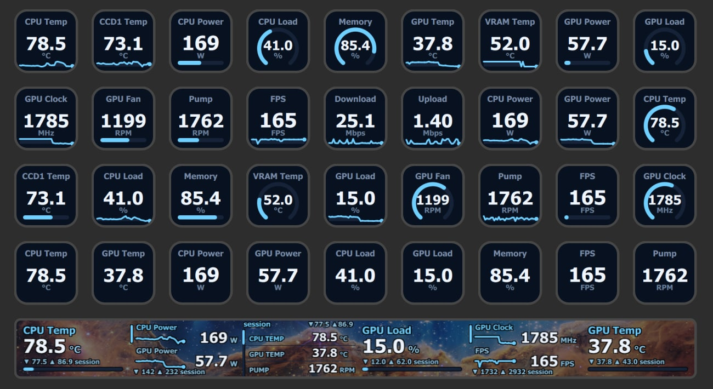

The Sensor Dial action shows HWiNFO readings on a Stream Deck + or Stream Deck + XL touchscreen. Choose one reading with a range bar, two readings with sparklines, or three compact rows. Turn to switch readings; push and touch to control the display.
This page describes 1.7. See what changed from 1.6.
It shares its data source, themes, thresholds, and formatting with Sensor Reading keys; this page covers only what’s specific to the dial. Windows only, HWiNFO required.

The touchscreen readout
The slot draws four things, top to bottom:
| Element | Shows |
|---|---|
| Title | Your Title on the dial. Left blank, the name you gave the reading with Rename in the rotation list, else HWiNFO’s label. |
| Value + unit | The live reading, formatted per Decimals, with the unit inline. A stat badge (· MIN, · MAX, · AVG) is appended when you’re viewing a session stat instead of the live value. |
| Stats line | ▼ <low> ▲ <high> session: the lowest and highest values seen this session. pinned replaces session while the dial is pinned, and cycle paused while its auto cycle is paused. A line too long for 12 px draws at 11 px; only a line too long even then loses words, session first. A short message (a group name after a group jump, stats reset) takes the whole line for a moment. |
| Range bar | A fill showing where the live value sits between the bar’s min and max. |
The bar always tracks the live value, even while you’re touching through MIN / MAX / AVG on the number above it.
Overview view
View offers two multi-row layouts besides the single readout, both listing what rotation moves through:
- Overview, two rows (big values and trend): two rows with large right-aligned values. A highlight band and accent bar mark the selection (the band only on the Theme and Glass backgrounds). Long labels wrap; labels that fit one line leave room for a sparkline. The footer shows the selected reading’s session statistics.
- Overview, three rows: one line per reading. A marker on the left shows the selection and window position. The context line contains the shared name and session
▼ low ▲ high; names shorten before statistics. Put it above or below the rows with Context line, and show or hide row dividers with Separators. Pause, pin and stat badges share the name area. Temporary messages briefly replace the context line.

Three things keep the short labels readable:
- Shared prefixes move to the context line. When the visible rows’ labels start with the same words (“GPU Temperature / GPU Hot Spot / GPU Thermal Limit”), the shared part is lifted out and shown once beside the stats: the rows read “Temperature / Hot Spot / Thermal Limit” with
GPUin the context line (the two-row face keeps it in its bottom line). Names you type yourself are never altered, and a reading whose whole label is the shared word (a plain “GPU” row) keeps it. To keep HWiNFO’s full names, set Row labels to Always full labels. - Values share one right-aligned column. Every value’s ones digit lands on the same column edge, with units in their own column beside it. The three-row face steps the value size down a ladder until the widest visible value fits, and each row’s label runs up to its own value before it shortens. Its columns stay in place unless a wide rate unit (Mbps, Gbps, MB/s, MT/s) is in view; since 1.7 the value and unit columns then move left together so the unit is not cut at the screen edge. The two-row face places its columns by the widest visible value, so a short value leaves more room for the labels.
-
You can rename any reading in the rotation. Select it in the rotation list under Readings to rotate through and press Rename in the toolbar under the list (or double-click it, or press F2 in the list), then type a new name in the Name on the dial for … field (Enter or click away to save; clear it to go back to HWiNFO’s name). The name shows on that row and as the dial’s title whenever that reading is selected, in both views. Unticking a reading keeps its name for later.
![The Rotation group of the dial's settings panel: the Readings to rotate through search and its help line, then a rotation list of three readings, two already renamed "CPU" (filled, as the one on the dial) and "GPU", and the third, PUMP SYS1, selected. Under the list, the Earlier, Later, Rename and Remove toolbar with Later dimmed because PUMP SYS1 is last, the "Name on the dial for PUMP SYS1" field with "Pump" typed and selected, the line "Rotation moves through these 3 readings only, in this order." and the Split into groups button.](./assets/img/pi-dial-rename.png)
For example, rename two
SPD Hub Temperaturereadings toDIMM 1andDIMM 2for display. This does not change HWiNFO’s names, so it does not separate two Gadget readings that share a name.
See the current rendered dial examples below.
The overview does not get its own list to manage. It shows exactly what rotation already steps through, in the same order:
- your rotation set, if you built one (any size; the view shows a two- or three-row window of it),
- the active rotation group when groups are in charge of a plain turn,
- otherwise the picked sensor’s readings.
Rotating works exactly as in the single view: the selection steps through the full list (saved as always), the mark follows it, and the three-row window scrolls with the selection, clamped at the ends. Auto cycle, alert interrupts, pin, pause, group jumps, touch taps and the HWiNFO Control key all keep working unchanged; a touch tap through MIN / MAX / AVG switches every row to that session stat and notes it beside the stats (the context line on three rows, the bottom line on two).
A few details specific to the view:
- The range bar and the big value belong to the single view; the overview trades them for the extra rows. Bar from / Bar to are hidden in the settings panel and not used while an overview is active; their values stay saved.
- Warn / Critical still apply (unit-scoped as always): a row whose reading trips a threshold shows its value in the alert color, and the alert-aware auto cycle can pull the selection (and so the window) to it.
- A Title on the dial renames the marked row only (and clears when the dial moves on to another reading unless Title when the dial moves on is set to Stays for this dial); names given with Rename stay with each reading instead.
- Values truncate at 12 characters and keep the shared Decimals setting; units truncate at 4 characters on the three-row face and 5 on the two-row face.
- With fewer than three readings in reach, the overview lists what there is; the status faces (HWiNFO down, no selection, sensor missing) are the same as the single view’s.
Switching back to One reading restores the exact single-view face.
Reading colors
These controls arrived in 1.7 (and the earlier issue #31 preview); 1.6.0 does not have them.
In Display, choose one of the two overview View options. Color numbers by sensor type and Reading colors then appear under the overview options. Reading colors uses the same presets and color wells as the four-reading key:
- Signal (four hues), Pairs (two hues) or Uniform applies a preset to the listed readings.
- Click a reading’s color well to choose its own number color. Two temperatures can have different colors, like CPU Temp and GPU Temp below.
- Auto resets one reading; Automatic resets the listed readings. Readings without a chosen color follow the sensor-type option below, or normal text.
Colors follow each reading through rotation, reordering and groups. Switching views or removing and re-adding a reading keeps its saved color. Individual colors work with Accent colors set to Theme accent everywhere, including on Paper. Labels, units, footer, graphs and the selection indicator keep their existing styling.
Saved colors also follow explicitly confirmed Shared Memory/Gadget links. If both linked keys have their own color, the displayed key’s choice wins. In an uncurated rotation the displayed key is the live key for unselected rows and the saved key for the selection, so a measurement with two saved colors can change color when rotation selects it. Keep one color per measurement to avoid that.

An actual settings-panel capture at panel build 1.7.1.0-1 (the marker in its title bar), served by the local test host with live HWiNFO Shared Memory readings.

Production-rendered fixed sample data. Both sides use Void, Text color Theme text and Accent colors Theme accent everywhere; only the individual reading colors change. This is not a hardware photograph.
For automatic category colors, tick Color numbers by sensor type and leave Accent colors (Advanced, Shared defaults) on By sensor type: temperature numbers share pink, fans cyan, power gold and load purple. The option is off by default. Paper, the theme accent everywhere and unknown categories keep normal text. Automatic colors adjust for readability on each row’s background.
Theme text keeps your chosen colors exact; Dimmed dims them. A valid Custom color, including one inherited from the shared Text color, overrides reading colors. Warning and critical values keep priority and the existing unit scoping. Leave both number-color controls at their defaults to keep the released appearance.
Gestures
These are the Legacy preset defaults, which every dial runs until you pick otherwise. The Dial controls & presets page covers the Elite and Custom presets, the pressed turn, touch zones, pause/pin, A stats reset clears, and the HWiNFO Control key action.
| Gesture | Effect |
|---|---|
| Turn (pressed or not) | Step through your rotation set if you built one, otherwise through the readings of the same sensor source (e.g. every reading under one GPU), wrapping around at the ends. The new choice is saved. Does nothing while Ignore turns is on. |
| Push (press the dial) | Reset the session min / max / average back to the current value. |
| Touch (tap the screen) | Cycle the displayed number: current → session min → session max → session average. |
| Long touch (touch and hold) | Jump straight back to the live current value. |
Note: Without a rotation set, a turn only walks readings that belong to the same physical sensor as your current pick, so you can spin through, say, all of one drive’s temperatures without leaving that device. To jump to a different source entirely, pick it under On the dial now in the settings panel, build a rotation set that crosses sensors, or use the Elite preset’s pressed-turn sensor jump.
Rotation set, Ignore turns, and Auto cycle
Three settings control what rotation can reach:
-
Rotation set. Tick readings in the Readings to rotate through search (under Reading, in the Rotation group) to build a custom list; the dial then rotates through only those readings, in list order, wrapping at the ends. Ticking never changes the reading on the dial; the On the dial now picker above it does that. The set can mix readings from different sensors. Picked readings show as a list under the search, in rotation order; select one and use Earlier, Later, Rename or Remove in the toolbar under it (in the list, Alt with an arrow key moves it and F2 renames it), and the reading on the dial right now is highlighted: turn, jump groups or let the auto cycle run with the panel open and the mark moves with it. A ticked reading HWiNFO is not publishing right now keeps its place, shows a missing pill and is skipped until it returns; the note under the list counts only the readings the dial steps through. Two readings with the same name (two drives’ Drive Temperature) carry the word that tells their sensors apart, such as #0 and #1. When the reading on the dial is not in the set, a line under the list says the next step leaves it and names where it goes. Leave the set empty for the default same-sensor behavior. The set can also be split into named rotation groups: a plain turn then stays inside one group and a pressed turn (Elite) jumps between groups.
![The top of the dial's settings panel: the header with the dial face beside CPU (Tctl/Tdie) and Live · Shared Memory, the theme strip on Default (shared: Void), then Reading with "cpu" typed in the Readings to rotate through search. The results sit under their sensor, each row a checkbox with its live value and type; Core 0 VID and Core 1 VID are ticked and form the rotation list under the search, with the Earlier, Later, Rename and Remove toolbar. A line at the bottom says CPU (Tctl/Tdie) is on the dial but not in this rotation, so the next step moves to Core 0 VID and does not come back.](./assets/img/pi-dial-picker.png)
![The top of the dial's settings panel: the header with the dial face beside CPU (Tctl/Tdie) and Live · Shared Memory, the theme strip on Default (shared: Void), On the dial now with the line "Turns and pressed turns change this too.", and a rotation of three readings from three sensors (CPU (Tctl/Tdie), filled as the one on the dial and selected, GPU Temperature and PUMP SYS1) with the Earlier, Later, Rename and Remove toolbar and Split into groups below it, then the title fields and the start of Display.](./assets/img/pi-dial-rotation.png)
- Ignore turns. A checkbox under Controls that makes the dial ignore rotation entirely, so a bump against the deck can never move you off the reading you chose. Push, touch, and the settings panel still work.
- Auto cycle. A select under Controls that steps to the next reading in the rotation set (or the picked sensor’s readings) on a timer, from every 5 seconds to every 5 minutes. It runs even while turns are ignored, which makes a hands-off tour of your picked readings: build a set, ignore turns, set a cycle time. A manual turn restarts the timer, and each step clears the custom title just like a manual turn (unless Title when the dial moves on is set to Stays for this dial). Timing rides the poll interval (Read every), so a step can land up to one read late. Ticking Auto cycle jumps to a critical reading (under Alerts) makes the cycle alert-aware: it holds instead of rotating away while the shown reading is critical, and its next step goes to a critical member of the set instead of the next one in order. Left unticked (the default), alerts do not steer the cycle; see Dial controls & presets.
Rotation also protects your selection when HWiNFO temporarily stops publishing the saved sensor (a restart, a device dropout): turns are ignored until the sensor returns, instead of jumping to an unrelated reading.
Session stats are the dial’s own, per reading
The dial calculates local min/max/average for each reading. These are separate from HWiNFO’s own statistics. The average is the sum of accepted observations divided by their count; it is not time-weighted. Repeated held frames do not count again.
- The selected reading, rotation-set members and multi-row view readings accumulate while the poller runs. Ordinary rotation preserves a reading’s session. Hidden dials can retain their state for up to 30 minutes, subject to the hidden-dial limit.
- A missing or non-finite reading, a stale or unavailable source, or a source, native-unit or type change resets the affected session; the first live frame after a stale or unavailable source shows stats reset: data gap once. A pairing edit resets a session only when its saved key now stands for a different measurement. This also applies to retained readings while another reading is selected. The next accepted sample starts the new session.
- Push resets the current reading under the Legacy preset. A stats reset clears can widen that to the set or every dial. Other presets can assign reset to a different gesture.
- Gadget can supply observations for these local statistics, but has no HWiNFO history or producer timestamp. Age unknown replaces the display when freshness cannot be established. See Data sources.
With no Sensor Reading key or Sensor Dial visible, polling stops. Retained state does not establish what happened during that unobserved period.
Settings
Open the dial’s settings panel (the Property Inspector) to configure it. It follows the same order as the key panel:
- The header, which stays at the top while you scroll: the dial’s current touchscreen face (the exact image the plugin last drew) beside the name the dial shows, the reading’s sensor (after HWiNFO’s own name for the reading when the dial shows another), and the data state in the face’s own words, such as Live · Shared Memory or No new data for 42 s.
- A status message under the header, only when something needs attention: what is wrong and the local fix, as buttons such as Check again (which says when the answer came back if nothing changed), HWiNFO setup steps, Reload sensor list, Pick another reading, or Data source setting when Data source is set to one provider only. A healthy Gadget source shows one line here instead.
- The theme strip, open on a first visit; folded, its line keeps the checked theme as a small chip in that theme’s colors, beside where it comes from.
- The sections Reading, Display, Alerts, Controls and Advanced.
Reading and Display start open; each folded section’s title line summarizes what it holds, so you can check a dial without opening anything. Sections you open or fold, and the groups inside Advanced, stay that way on every dial’s panel while the plugin runs; after the Stream Deck app restarts they start from the defaults again. The two chevron buttons at the top right of the header open or fold them all at once (so does Alt-click on a section title). Folding writes nothing to your dials.
| Section | Setting | What it does |
|---|---|---|
| Theme strip | Theme | Under the header, open on a first visit; it folds like a section, and folded its line keeps the checked theme as a small chip. When the dial’s own theme differs from the shared one, Make shared takes Change’s place and makes that theme the shared one, setting the dial back to Default. One line names what is drawn and where it comes from, for example Default (shared: Void) with Change, which opens the shared theme under Advanced, or Ember (set on this dial). Under it, a chip per theme with its name on it, led by the Default chip, which follows the shared theme. See Themes. |
| Reading | On the dial now | Searchable picker over every reading HWiNFO publishes, with live values; the button beside it reloads the sensor list. The line under it names what else changes the reading on this dial, from the dial’s control map, for example Turns and pressed turns change this too. Arrow keys browse, Enter picks, Tab or a click elsewhere closes without changing anything. |
| Reading | Readings to rotate through | The Rotation group sits right under On the dial now: first a search whose results tick readings in or out (ticking never changes what is on the dial now), then the ticked readings in rotation order as one list, the one on the dial highlighted, so you can watch it move as the dial turns, and one HWiNFO no longer lists marked missing. Select a reading and use the toolbar under the list: Earlier, Later, Rename, Remove. The list is one Tab stop; arrow keys select and Delete removes. Empty means every reading of the picked sensor: an overview then shows the reading on the dial and the ones after it in HWiNFO’s list. Can be split into named rotation groups. |
| Reading | Title on the dial | Custom title; blank falls back to the reading’s own (renamed) label. |
| Reading | Title when the dial moves on | Clears (default): a custom title clears whenever the dial moves on to another reading, by a turn, a press or touch set to step, a Control key or the auto cycle; picking a reading in the settings panel keeps it. Stays for this dial keeps it as a fixed title. |
| Display | Text color | Default (follows the shared Text color and names it, for example Default (shared: Theme text)), Theme text, Dimmed, or Custom color with an exact color. See Themes. |
| Display | Background | Theme (default) fills the dial’s part of the touch strip with the theme’s background. Glass, Tint, Outline and Clear show the touch strip picture set in the Stream Deck app behind the dial. See Transparent background. |
| Display | Words in the accent color | Glass, Tint and Outline only: the title and the selected row’s name take the accent color, and units, statistics and other names move halfway to it. Off by default. See Transparent background. |
| Display | View | One reading (default), or an overview of the rotation list: Overview, two rows (big values and trend) or Overview, three rows. |
| Display | Decimals | Auto (magnitude-based; compacts large values through k/M/G/T, e.g. 48.7M) or a fixed 0–3. Byte and rate units re-tier under the shared Data units preference instead. |
| Display | °F (under Temperature) | Temperatures in °F instead of °C. |
| Display | Row labels | Overview only: shorten shared words into the context line (default), or Always full labels. |
| Display | Context line | Three-row overview only: the shared name and session stats line sits above the rows (default) or below them. |
| Display | Separators | Three-row overview only: thin lines between rows (default), or none. |
| Display | Color numbers by sensor type | Overviews only: opt into automatic category colors for normal numbers. Off by default. See Reading colors. |
| Display | Reading colors | Overviews only: choose a preset or individual number colors, with Auto to reset a reading. See Reading colors. |
| Display | Bar from / Bar to | One-reading view only (hidden on the overviews): fixed ends of the range bar. Leave blank to follow the session low and high. |
| Alerts | Warn at / Critical at | Values at which the bar fill (or an overview row’s value) turns amber or red. Use the displayed temperature unit; byte and rate values use HWiNFO’s original unit before Data units changes the display scale. The title line says what is set, e.g. Warn ≥ 80 °C · °C readings only. |
| Alerts | Alert when the value drops to or below these numbers | Flips the comparison: for fan RPM, clocks and other where-lower-is-worse readings. |
| Alerts | Auto cycle jumps to a critical reading | Makes the auto cycle alert-aware: it jumps to a critical member of the rotation instead of waiting its turn, and holds there while the reading stays critical. Off by default. |
| Controls | Gestures | Legacy (default), Elite or Custom. Under it the panel lists what each gesture does on this dial now. Custom adds one command per gesture (Turn, Pressed turn, Short push, Long push, Touch tap, Long touch). See Dial controls & presets. |
| Controls | Touch zones | Elite and Custom only: split the strip into previous and next, optionally with a center tap. Off by default. |
| Controls | Ignore turns | Disables rotation for bump protection. |
| Controls | Auto cycle | Timer that steps through the rotation automatically, every 5 seconds to every 5 minutes. Off by default. |
| Controls | A stats reset clears | This reading only (default), The whole rotation set, or Every dial, everywhere. |
| Controls | Link ID | The name HWiNFO Control keys target to steer this dial. |
The Controls title line reads the dial’s resolved gesture map, so a Touch tap made dead by two touch zones is not listed as if it worked.
Thresholds and the manual bar range are unit-scoped: they only apply to readings in the unit they were typed against, so a °C threshold can never misfire on an RPM reading you rotate to. Details on the controls page.
Bar range: fixed vs. session
By default (both fields blank) the bar spans the session low → high, so the fill grows as new extremes appear and always uses the full width of the range you’ve actually seen. Set Bar from / Bar to (Display) to pin the bar to a fixed scale instead (e.g. 0 and 100 for a usage percentage, or 30 and 90 for a CPU temperature) so the fill position means the same thing every time you glance at it. You can set just one end; the other stays automatic.
With Warn at or Critical at set, the bar’s track also marks the threshold zones in muted amber and red, escalating toward the alarmed end (the low side when alerts fire on a drop), the same zones a key’s Bar or Ring display draws, and an automatic range widens just enough to keep them visible. A manual Bar from / Bar to is never widened; zones outside it are simply clipped. The zones are fixed landmarks; the fill is the live value, at full strength (accent normally, amber/red while alerting) so it always reads over them.
Transparent background
Background is new in 1.7.1; 1.7.0 does not have it. The Stream Deck app can show a picture behind the touch strip: right-click the strip in the app and choose Set from File… or Open Background Library. A page, a folder and a single dial can each have their own. A Sensor Dial fills its 200 x 100 part of the strip with the theme’s background, which hides that picture. Background (Display) chooses what the dial draws instead:
| Background | What the dial draws | Text over the picture |
|---|---|---|
| Theme (default) | The theme’s background, exactly as before. | The picture does not show. |
| Glass | The theme’s background as a panel at 80% opacity, so the picture shows through at 20%. | Built-in text keeps 4.5:1 contrast over any picture (a calculation). |
| Tint | The theme’s background as a panel at 50% opacity, so the picture shows through at half strength, with Outline’s 1 px outline on every word and mark. | Built-in text keeps 4.5:1 contrast against its outline (a calculation). |
| Outline | No background. Every word, the range bar, the rail mark and the trend line get a 1 px outline: black on the dark themes, the theme’s background on Paper. | Built-in text keeps 4.5:1 contrast against its outline (a calculation). |
| Clear | No background and no outline. | Depends on the picture. |

Stream Deck app captures with live readings on a Stream Deck + XL. From left: Theme, Glass, Tint, Outline, Clear, then Tint in the three-row view. Strip pictures: the Cosmic Cliffs (NASA, ESA, CSA, STScI), auroras photographed from the International Space Station (NASA), and gradients I made.
Glass. The plugin cannot read the picture, so I calculate Glass’s text colors against the hardest case: the panel over pure white, or over pure black for Paper. Every built-in value, unit, statistic and label keeps the 4.5:1 floor of the display system over any picture. That is why labels and units draw lighter on Glass (darker on Paper), and why an overview value in alert can draw a lighter amber or red (a darker one on Paper) where the theme’s own falls short there. The red lifts most on Graphite, whose background is the lightest of the dark themes, and on the selected row of the two-row view. The bar track, the rail groove, the separators, the selected two-row band and the area under a trend draw in the theme’s label color at 20%.
Tint. The panel is the theme’s background at 50%, so more of the picture shows than on Glass. Over a white picture (black on Paper) that panel leaves the theme’s own text below 4.5:1, so Tint does not rely on it: it draws Outline’s 1 px outline and uses Outline’s text colors, described next.
Outline. Labels take the value color, and units and statistics a dimmer step of it, so a gray word does not merge with its dark outline over a light picture. The two-row view draws no band behind the selected row (the accent rail and the brighter label mark it) and draws trend lines without the shaded area under them. Separators stay thin lines in the theme’s track color.
Clear. Labels, units and statistics take the value color. Use a dark, even picture with a dark theme, or a light one with Paper. Over a bright, mid-tone or busy picture the text has no contrast floor; use Glass, Tint or Outline there. The range bar, the three-row rail and the two-row rail keep a track 1 px wider than themselves, and trend lines keep their shaded area.
Words in the accent color. On Glass, Tint and Outline, a box under Background draws the dial’s words in its accent color, the color of the range bar and the rail mark. The title, the selected row’s name and the context line’s name take the accent. Units, statistics and the other rows’ names take their usual color moved halfway toward it, and the selected row’s name never has less contrast than they do. With Accent colors (Advanced, Shared defaults) on By sensor type, the accent is the sensor type’s color, so the words change color with the reading on the dial. Under Dimmed the accent dims with the rest of the text. Values, alert colors, Color numbers by sensor type, Reading colors and a Custom color for text do not change.
Each recolored word keeps the 4.5:1 floor of the rest of the text on that look (a calculation). Where an accent falls short of it, mostly on Glass, the word draws a lighter shade of it than the bar (a darker one on Paper). Paper’s accent is a dark gray, so on Paper the words change little. Clear does not offer the box: with no panel and no outline, a word has only the picture behind it, and the value color is already the theme’s most readable color there.

A Stream Deck app capture of a whole + XL page with live readings: Midnight keys, and six dials on Tint with Words in the accent color. Strip picture: the Cosmic Cliffs (NASA, ESA, CSA, STScI).
On Glass, Tint, Outline and Clear:
- In the two-row view only Glass draws the band behind the selected row. Tint, Outline and Clear mark that row with the accent rail and the brighter label.
- Status screens such as Start HWiNFO show their text without the empty range bar on Tint, Outline and Clear. Glass keeps it as a faint groove.
- A Custom color for text and chosen Reading colors stay exactly as chosen and can fall below the floor over a bright picture.
- With no background box to hide a label that runs long, a three-row label and a two-row label’s second line are cut to their measured width, or left off when not even an ellipsis fits, so a label with emoji or symbols the face font does not have is shortened a little sooner.
- The settings panel header cannot show your picture, so it previews a see-through dial over a checkerboard. Sensor Reading keys are not affected.
- Tint’s and Outline’s outline is an SVG filter, which the Stream Deck app draws on the versions I checked (7.4 and 7.6). I have run Glass and Outline on my Stream Deck + XL since 2026-10-16.
Alerts on a dial
Dials take the same Warn at / Critical at thresholds as keys, compared against the live value. But the alert shows differently, and differently per view: on the single view only the range bar’s fill flips to the alert color (amber for warn, red for critical) while the label, value and rest of the face stay in your chosen theme; the two overview layouts have no range bar, so there the alerting row’s value text carries the color instead.
Since 1.7, overview alert values adjust for contrast against the row background. Alerts take priority over individual reading colors and a custom text color. See Themes & alerts.
Note: The single view has no sparkline; its range bar is the at-a-glance indicator there. The two-row overview draws real sparklines for its visible readings.
Status screens
When HWiNFO isn’t delivering data, the touchscreen shows a short two-line message instead of a reading:
| Touchscreen | Meaning / fix |
|---|---|
| Start HWiNFO / not detected | HWiNFO isn’t publishing to the selected data source (in Auto, to neither). Start it (Shared Memory Support or Gadget reporting), or check Data source. |
| Source busy / retrying | The sensor source was busy or changed during a read. The plugin retries automatically on the next poll. |
| Shared Memory off / enable in HWiNFO | HWiNFO reports sharing disabled. Re-enable it, or rely on the Gadget fallback in Auto mode. |
| No new data / check sharing | No new Shared Memory measurement evidence has been observed within the grace period. Check HWiNFO and Shared Memory Support; a busy connection can also prevent reads. |
| Age unknown / check Gadget | Gadget has no producer timestamp. Before the first observed value change, or after 15 seconds without another, the plugin cannot tell whether the source is steady or stopped. Check HWiNFO and Gadget reporting. |
| Gadget empty / tick sensors | The Gadget registry is present but has no readable sensor rows. In HWiNFO, open Configure Sensors and the HWiNFO Gadget tab; check Enable reporting to Gadget and tick the readings you need. |
| Access denied / open settings | Windows denied access needed to read the sensor source; the error does not identify which access rule failed. Open settings and choose Copy support report for support. Review the Windows account, session and privilege settings of HWiNFO and Stream Deck. |
| Source error / open settings | The sensor source could not be opened or validated. In Auto mode a Gadget failure shows this only while Shared Memory is not running. Open settings and choose Copy support report for support. |
| Bridge failed / reinstall it | The native HWiNFO bridge (bin/hwsm.node) could not load. Reinstall the plugin from its release package, then restart it. Keep any Windows or security-software report for support. |
Before you’ve picked a sensor, the dial shows HWiNFO / rotate to pick with the hint or use the settings panel. If a saved sensor is no longer in HWiNFO’s output, it shows Sensor missing / waiting with the hint reselect in settings, and turns are ignored so your saved pick survives the outage; reselect in settings if the sensor is gone for good.
Advanced (shared by all keys and dials)
The dial’s Advanced section holds the same four groups as the key panel, each folding on its own. The two shared ones are marked All keys and dials: Shared defaults (Theme, Text color, Text font, Accent colors, Data units) and Connection (Data source, Read every, the reading-links note and the HWiNFO setup steps checklist). They apply to the whole plugin rather than to this dial alone; they’re documented in Data sources, Themes, and the key page’s Advanced section. Support holds the Copy support report button. Configuration documents shows this dial’s settings and the shared settings as JSON, with Copy, Replace this dial’s settings and Replace shared settings; they behave exactly as described on the key page, including the second click that replacing shared settings asks for.
![The dial's Advanced section at the panel's real width with its four groups open: Shared defaults (marked All keys and dials) with Theme, Text color, Text font, Accent colors and Data units; Connection (marked All keys and dials) with Data source, Read every, the reading-links note and the folded HWiNFO setup steps; Support with the Copy support report button; and Configuration documents with the This dial's settings and Shared settings wells, their Copy buttons and the Replace this dial's settings and Replace shared settings buttons.](./assets/img/pi-live-dial-advanced.png)